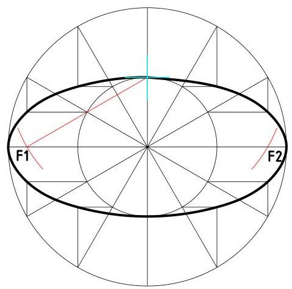
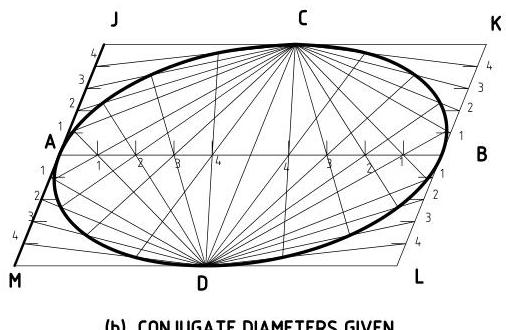
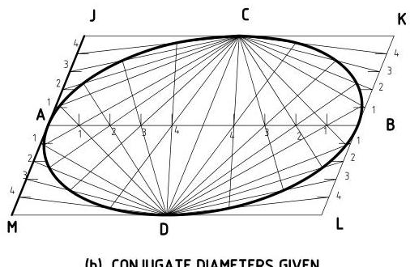

Loci
Introduction
The locus of a point is the path traced by that point when moving under given conditions. Many curves can be classified as loci; ellipse, parabola, hyperbola, hypocycloid, cycloid, trochoid, involute, etc. The study of loci is especially important in machine design where it is often necessary to determine the space requirements for a linkage or the envelope of a mechanism for the provision of effective guards.
Involute
An involute is the path traced by a point on a string as it unwinds from a line, a polygon, or a circle. The involute of a circle is the most important of these curves as it finds applications in the construction of involute gear teeth. The involute may be generated by points on a straight line which is rolled on a fixed circle. This can be done as follows:
- set off equal distances 0-1, 1-2, 2-3 ... along the circumference of the circle.
- draw a tangent at each division point
- set off along each tangent, the length of the corresponding circular arc.
- draw the required curve through the points set off on the several tangents A, B, C, D, ...
Cycloids
A cycloid is the locus of points generated by a fixed point on the circumference of a circle as the circle rolls along a straight line. This curve can be obtained as follows:
- Given the generating circle and the straight line AB tangent to it, make the distances CA and CB equal to half the circumference of the circle.
- Divide these distances and each semicircle into 6 equal parts and number them consecutively as shown.
- Suppose the circle rolls to the left, point 1 on the circumference move to point 1' on the line, the center will be at D and the generating point 6 will be at the same distance from line AB as point 5 is when the circle is i the home position.
- To find point $p$ draw a line through point 5 parallel to line AB and intersect it with an arc drawn from center D with radius equal to that of the circle.
Trochoids
A trochoid is the locus of a point $\mathrm{P}$ at distance $\mathrm{b}$ from the center of a circle (of radius $\mathrm{r}$) as the circle rolls along a straight line, where $b \neq r$.
Assignment 2(a)
Plot the locus of a point $p$ shown in figure 4.3 as the circle rolls along line AB for one complete revolution of the circle.
Reveal Solution
Figure 4.4 shows the locus in ass 2(a).
Trochoidal curves find application in the construction of the fillet gear tooth profiles.
Parabola
A parabola is the curve traced by a set of points in a plane, that are equidistant from a point (focus) and a line (directrix). The parabola can be developed in various ways:
i. Focus and Directrix Method
Given the focus and directrix AB, draw a line perpendicular to AB to cut AB at C. Divide this line into a number of equal parts. Draw lines parallel to AB through the division points, Z. With center at F and radius C-Z (division points), strike arcs to intersect the parallel line in the points Q and R which are points on the parabola.
ii. Rectangle or Parallelogram Method
Given a rectangle or parallelogram ABCD. Divide BC into any even number of equal parts and divide the sides AB and CD into half as many parts and draw lines as shown. The intersection of like-numbered lines are points on the parabola. A perpendicular bisector of a line OP tangent to the parabola and intersecting the axis, intersects the axis at the focus.
Practical Applications
- The parabola is used for reflecting surfaces for light and sound
- Curves of cables for suspension bridges
- to show bending moment at any point on a uniformly loaded beam
- To obtain the displacement diagram for uniformly accelerating motion.
Ellipse
An ellipse is the curve generated by a point moving so that the sum of its distances from two points (the foci) is constant and equal to the major axis. Ellipse construction:
-
1
Given the major and minor axis, draw concentric circles with the major and minor diameters. Divide the circles into a number of equal sectors. Draw horizontal lines from the division points on the minor circle to intersect a vertical line from a corresponding division point on the major circle. The point of intersection is a point on the ellipse. To find the foci F1 and F2, strike arcs with radius equal to half the major axis and with centers at the ends of the minor axis.

Figure 4.7: Ellipse construction given the major and minor diameters -
2
Given major and minor axis, or the conjugate diameters AB and CD, draw a rectangle or parallelogram with sides parallel to the axes respectively. Divide AO and AJ into the same number of equal parts and draw lines through these points. The intersection of like-numbered lines will be points on the ellipse.
 

Figure 4.8: Ellipse construction given major or minor diameters
Locus of a point on a mechanism
Mechanism are used for power transmission in machines. It is sometimes necessary to plot the locus of a point on a mechanism for construction of suitable guards or for motion analysis. The usual method of drawing the locus of a point on a mechanism is to construct the outline or or skeleton drawings of the mechanism in a number of positions, plotting the point in each position and then drawing a smooth curve (the locus) through the points obtained.

Figure 4.9: Common joints in mechanisms
Example 1
Figure 4.10 shows a slider crank mechanism. Plot the locus of point C for one complete revolution of the crank OA.
Example 2
Question (a)
Draw the locus traced by a point P which moves so that it is equidistant from a line and a point, 40 mm apart. The maximum distance between P the line should be 80 mm. Name and state one application the curve produced.
Reveal Solution (a)
Marks Distribution:
- Division: 3 mks
- Construction work: 4 mks
- Curve (Locus): 3 mks
- Linework & Neatness: 2 mks
- Total: 12 mks
Question (b)
The mechanism given in Figure 4.12 consists of crank OA which rotates about centre O, link BC which oscillates about centre C and the coupler, AB. Plot the locus traced by the mid-point P of the coupler for one complete revolution of crank OA.